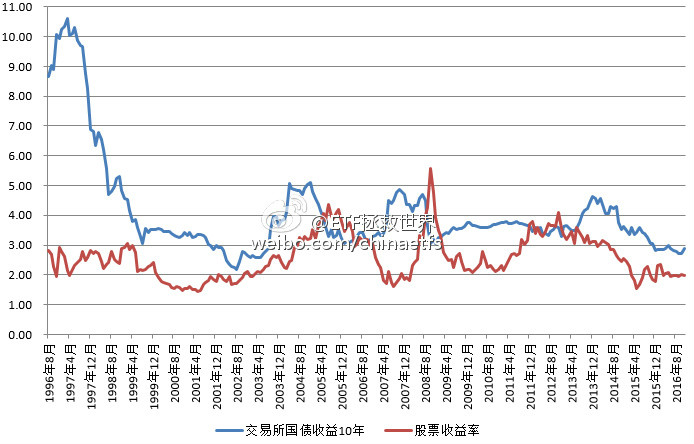

仔细看这张图，有几点需要注意。
在资金极度泛滥的时候，会出现股债双牛。比如2002年之前，比如这两年；
在资金比较匮乏的时候，会出现股债双杀。比如2005，比如2011。
一般情况下，则会股债跷跷板。历史上三次股票收益率大于债券收益率的时候是2005、2008年底和2012年底。这就是三次A股大底，是财富爆发的起点。
现在无疑是资金泛滥，任何品种的未来收益率都很低。做投资最好不要近因，觉得最近发生的事情未来会一直发生。
股票收益率历史在2-4之间波动，债券是3-5。现在基本都在下沿。只是说一般情况，有几次比较特殊可以从图上看出来。分别是2008年底的股票，和2002的债券。
在资金极度泛滥的时候，会出现股债双牛。比如2002年之前，比如这两年；
在资金比较匮乏的时候，会出现股债双杀。比如2005，比如2011。
一般情况下，则会股债跷跷板。历史上三次股票收益率大于债券收益率的时候是2005、2008年底和2012年底。这就是三次A股大底，是财富爆发的起点。
现在无疑是资金泛滥，任何品种的未来收益率都很低。做投资最好不要近因，觉得最近发生的事情未来会一直发生。
股票收益率历史在2-4之间波动，债券是3-5。现在基本都在下沿。只是说一般情况，有几次比较特殊可以从图上看出来。分别是2008年底的股票，和2002的债券。
- 